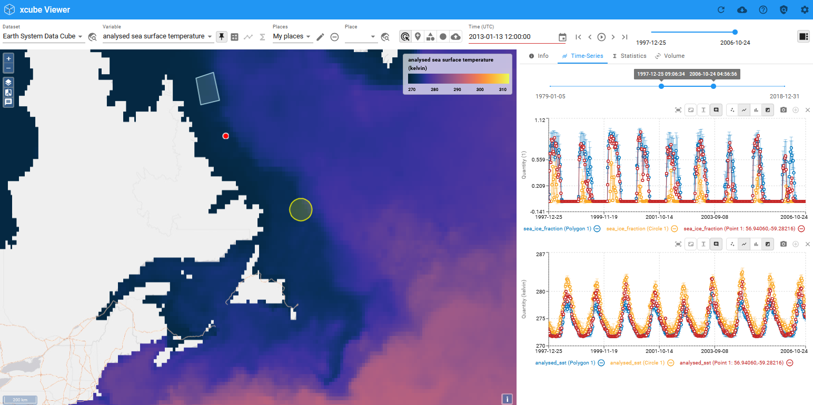
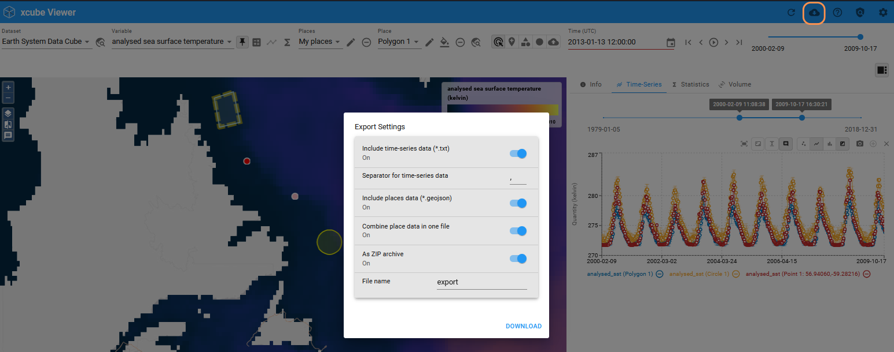
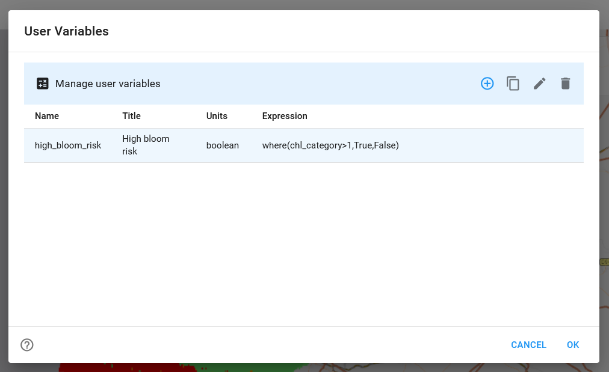

Analyse Variables¶
Infobox¶

Enable a small pixel information box being displayed next to the pointer when hovering over the map. It shows the current map coordinates and the values of the currently selected variable at that position. The feature is switched on and off from the layer selector menu on the left.
Extract Information¶
The Viewer provides the ability to extract information from variables at selected places (point, circle, or polygon), in the form of time series and basic statistics. All extracted information is displayed on the right side of the Viewer in the sidebar.

Time-Series¶
When adding a new place to the map, a time series will automatically be extracted and displayed by default. To display a time series for an already existing place, simply select it and use the graph-icon next to the variables drop-down menu.
To remove a place from a graph, click the --icon next to the place listed below the graph. The color of a place corresponds to the color in the time series graphs. The coordinates of the places visualized in the time series can be found beneath the graphs.
There are multiple options to explore the graph:
- Adjust the time range to focus on a specific period of interest. This applies to time series of different variables within a dataset (a)
- Reset everything back to the full scale (b)
- Zoom into the graph freely by pressing the
Ctrl-key (c) - Set a fixed y-scale for the graph (d)
- Hover over the graph to view detailed information for specific time steps via a popup info box (e)
- Display data with points, lines, or bars. For polygons or circles, you can also add the standard deviation to the graph (f)
- Copy a snapshot a time series to clipboard (g)
Export time series¶
Export the time series using the option in the header at the top right. You have the option to export the time series, the geometries of the places, or both.

Statistics¶
Compute and display basic statistics for the currently selected variable, selected timestamp, and selected place. To obtain the statistics select a place and compute by using the \(\Sigma\) -icon next to the variables drop-down menu or use the +-icon under the Statistics Tab in the sidebar.
If the place is an area:
- Statistics include minimum, maximum, mean, standard deviation, and a histogram
- Adjust the x-range of the histogram (a)
- Add the standard deviation to the histogram (b)
- Copy a snapshot of the statistics to clipboard (c)
For point places:
- the value at the point is displayed
User Variables¶
Define your own variables computed from Python-like expressions. The expressions can combine other variables of the current dataset using almost all Python operators and all numpy universal functions. User data variables are persisted in the browser's local storage.
In more detail
A user variable is a variable that is defined by a name, title, units, and by an algebraic expression that is used to compute the variable's array data. User variables are added to the currently selected dataset and their expressions are evaluated in the context of the selected dataset.
Name: A name that is unique within the selected dataset's variables. The name must start with a letter optionally followed by letters or digits.
Title: Optional display name of the variable in the user interface.
Units: Optional physical units of the computed data values. For example, units are used to group time-series.
Expression: An algebraic expression used to compute the variable's data values. The syntax is that of Python expressions. The expression may reference the following names:
- the current dataset's data variables;
- the numpy constants
e,pi,nan,inf; - all numpy ufunc functions;
- the
wherefunction.
The majority of Python numerical and logical operators are supported,
however, the logical operators and, or, and not cannot be used with
array variables as they require boolean values as operands. Use the bitwise
operators &, |, ~ instead or use the
corresponding functions logical_and(), logical_or(), and logical_not().
Python built-in functions such as min() and max() are not supported,
use fmin() and fmax() instead.
Expression examples:
- Mask out where a variable
chlis lower than zero:where(chl >= 0, chl, nan) - Sentinel-2 vegetation index or NDVI:
(B08 - B04) / (B08 + B04) - Sentinel-2 moisture index:
(B8A - B11) / (B8A + B11)
Invalid expressions return an error message.
CTRL+SPACE: activates the autocomplete feature, which lists available Python functions and constants
Open the User Variables Window via the button on the header:
In the User Variables Window:
- New user variables can be created and added.
- Existing user variables can be edited, duplicated, and removed.

Add¶
- Open the User Variables window
- Use the
+- button to open theAdd Variable- Dialog. - Set at least a unique identifier (
Name) and a valid expression. - Add the new variable.

For more information on this feature, see the feature references.
Edit¶
- Open the User Variables window.
- Use the
edit- button to open theEdit Variable- Dialog. - Edit the identifier, title, unit or expression.
- Apply the changes to the selected variable.
For more information on this feature, see the feature references.
Compare Variables¶
Visually compare two variables using Compare Mode. This mode displays two variables side by side, with a slider in the middle that can be adjusted.

To enter Compare Mode:
- Pin a variable, which will be displayed on the left. This will automatically activate Compare Mode.
- Select a second variable for comparison, which will be displayed on the right.
To exit Compare Mode: use the button on the left
Navigate through time¶

Use the shown features of the Viewer to navigate through the time steps of a variable. Select a specific date in the calendar view, move through the dataset time step by time step, jump to the beginning or end of the dataset, move the slider on the bar to select a time step, or start the player.
The Player¶
Use the player to auto-step through the variable of a dataset. The interval can be adjusted in the settings.

Places¶
Places provide a spatial reference for extracting statistical values and time series data. They can be represented as either points or polygons/circles and are organized into groups which hold individial places.
The Viewer offers a variety of features for working with places (such as adding, removing, and styling) to obtain statistical information. The following sections will explain the available features.


Create¶
New places can be created in the Viewer using the buttons in the header, with points and polygons/circles being the available geometry types.
Import¶
Externally created places can also be imported. The allowed formats are text/csv, GeoJSON and WKT. When importing a CSV table or a GeoJSON object, the time column name or time property can be specified. If given, time values are expected to be UTC and ISO format.

Select¶
Place groups and individual places can be selected through a drop-down menu in the header. Additionally, individual places can be selected by clicking on them directly on the map when the corresponding function is enabled. Selected places are highlighted on the map with a yellow ring.
Remove¶
Remove place groups or places by selecting the group or object and deleting it via the button in the header.
Rename¶
Place groups and individial places can be renamed in the Viewer via the according buttons.
Styling¶
Modify both the color and opacity of a place. The selected color will be reflected consistently in the time series chart.
Export¶
The geometry of places created in the Viewer can be exported. This feature can be enabled during the export of time series. To include the geometry information in the export, it must be explicitly selected.